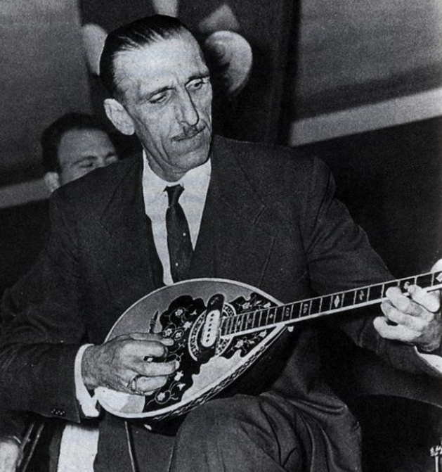

Ο Ψηλός του Ρεμπέτικου (1913 – 1972)

Ο Γιάννης Παπαϊωάννου γεννήθηκε στην Κίο της Βιθυνίας στη Μικρά Ασία το 1913. Μετά τη Μικρασιατική Καταστροφή το 1922 έφτασε προσφυγόπουλο με την οικογένειά του στις Τζιτζιφιές της Καλλιθέας. Από μικρή ηλικία ρίχτηκε στη σκληρή βιοπάλη, κάνοντας μεροκάματα ως εργάτης σε οικοδομές, ξυλουργεία, αλλά και ως ψαράς για να βοηθήσει την οικογένειά του.
Η ζωή του άλλαξε καθοριστικά όταν ήταν ακόμα ένας απλός νεαρός εργάτης. Μια μέρα, βρισκόμενος σε μια ταβέρνα, άκουσε για πρώτη φορά τον οργανοπαίχτη Ζαχαρία Χαλκιά να παίζει στο μπουζούκι το περίφημο «Μινόρε του Τεκέ». Ο ήχος αυτός τον μάγεψε και τον συγκλόνισε τόσο βαθιά, που αποφάσισε αμέσως να αφήσει τις άλλες δουλειές και να αφοσιωθεί ψυχή τε και σώματι στη μουσική και το μπουζούκι.
«Μόλις άκουσα τον Χαλκιά να παίζει το Μινόρε, ένιωσα ένα ρίγος να με διαπερνά. Εκείνη τη στιγμή κατάλαβα τι ήθελα να κάνω στη ζωή μου. Το μπουζούκι με κέρδισε για πάντα.»
Ο Παπαϊωάννου υπήρξε ένας από τους πρώτους που έβγαλαν το ρεμπέτικο από τα στενά όρια του περιθωρίου και το έφεραν στα μεγάλα κέντρα διασκέδασης. Στις Τζιτζιφιές δημιούργησε μερικά από τα πιο ιστορικά στέκια, προσφέροντας στο κοινό αρχοντικό, γλυκό και αυθεντικό λαϊκό πρόγραμμα.
Ο Γιάννης Παπαϊωάννου συνέθεσε και ερμήνευσε μερικές από τις μεγαλύτερες επιτυχίες της ελληνικής μουσικής: